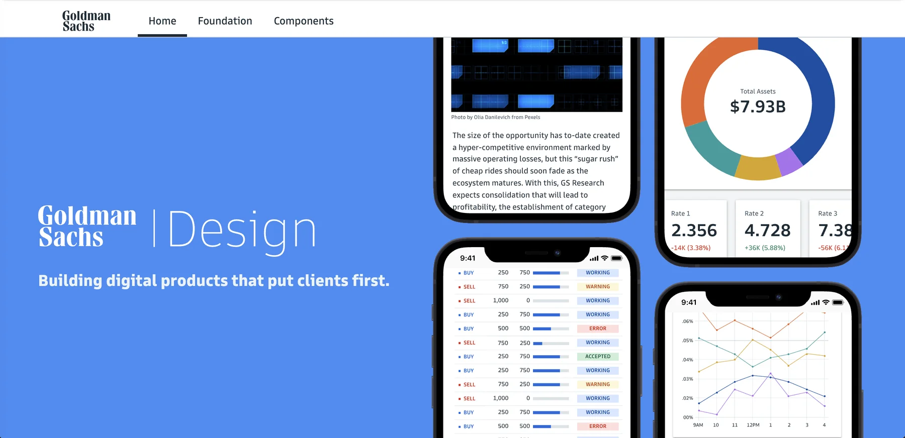

Some client work is under NDA. Email me and I'll send the password right over: dougblack1@gmail.com
Brand voice for Private Wealth Management, and the language layer of the firm's public design system. Embedded at the firm's headquarters across two engagements, 2018 to 2020, through Publicis Sapient.
$10M+
Minimum investable assets for the clients the platform served
~40
Components given a language layer, across 60 pages
Feb 2020
The design system published publicly at design.gs.com
I wrote the brand voice guidelines for the Private Wealth Management platform: the persona, the principles, and the terminology. The audience was Goldman's ultra-high-net-worth clients. The constraint was writing that had to satisfy Legal and compliance and still sound like a person wrote it.
The work came down to standards, terminology, and patterns that let the platform's teams stay on voice without a writer sitting in every review.
I led the copy on the language layer of Goldman's public design system. Every label, every empty state, every error message, written once and then used by teams I would never brief.
The test was never whether the lines were good. It was whether a product manager on a deadline, with no writer available, would make the same call I would. That meant terminology settled in advance and rules written so that whoever reads them arrives at the right line.

I wrote the system's home page, which was public from launch. The design principles were published under the firm's name and are still in the Internet Archive. I wrote them as clear instructions rather than vague aspirations.
“Financial tools are rarely simple. But they can always be clear. With elegant craftsmanship, we create intuitive workflows that give users confidence in their actions.”
Clarify complexity, one of five design principles. Goldman Sachs Design System, February 2020. Read it in the Internet Archive →
“Empower clients” was another. It later became the headline of the color system page.
Hiring was part of the role. I recruited junior writers onto the team, onboarded them, and managed their daily work.
I led naming and product language on an internal analytics platform, wrote its technical documentation, and wrote the executive narrative that introduced it to firm leadership. Three very different audiences for the same thing, which is a useful test of whether a voice system actually holds.